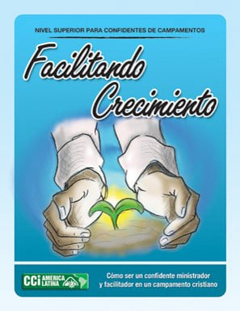

Construyendo Relaciones
Cómo construir relaciones en el ambiente del campamento cristiano.
~ Factores que hacen aconsejable la realización de campamentos
~ Tipos de eventos realizados en un sitio de campamento
~ El confidente y sus cuatro relaciones: con Dios, consigo mismo, con el prójimo, con la creación
~ Siete reglas de oro para el confidente
~ Diez normas con qué crear el ambiente para crecer
~ Actividades claves del programa

Facilitando Crecimiento
Cómo ser un confidente ministrador y facilitador en un campamento cristiano.
~ El papel del confidente como facilitador y ministrador
~ El arte de ser seguidor
~ Disciplinando para discipular
~ La recreación con propósito
~ La consejería bíblica
~ Estilos de aprendizaje
~ Características de las edades